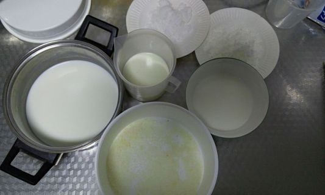
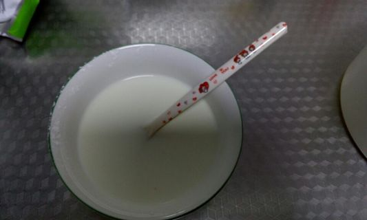
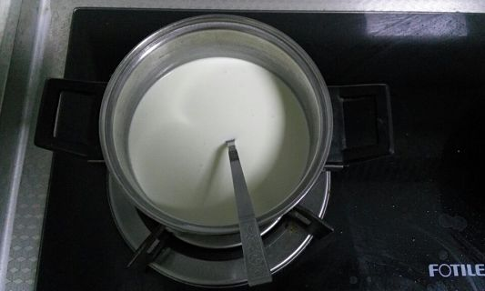
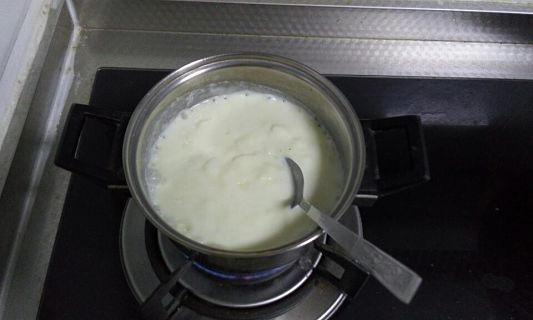
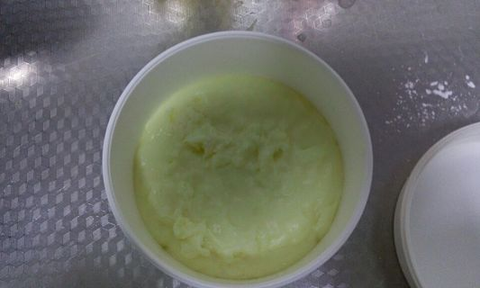
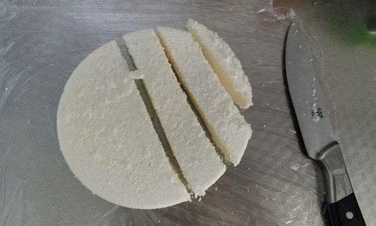
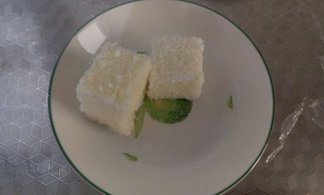

这款甜点的名字总是让我想到那句小芳的歌词~~
用料
- 牛奶 240克（一份80克、一份160克）
- 淡奶油 100克
- 白糖 40克
- 玉米淀粉 40克
- 椰蓉 适量
做法
1. 准备材料
准备好所有材料，若不喜欢甜味太重，白糖可以减量，准备一个容器（耐热性要好，没有找到长方形的容器，我用了圆形的饭盒）底部铺满椰蓉。

2. 混合步骤一
将80克牛奶与40克玉米淀粉混合，搅拌均匀。

3. 混合步骤二
将160克牛奶与淡奶油、白糖混合加热，边加热边搅拌。

4. 混合步骤三
步骤二中奶液煮沸后，将步骤一中的牛奶玉米淀粉混合液倒入锅中，不停的搅拌就会发生神奇的凝固！

5. 容器造型
当锅内奶浆变的粘稠后，有点类似膏状便倒入事先铺好椰蓉的容器中（火候没掌握好，倒晚了以至于表层不匀）。

6. 冷藏阶段
等凝固后的奶浆冷却后，放入冰箱冷藏室中冷藏12H以上。冷藏好以后脱模，切块，四周扑撒椰蓉（脱模前可以事先用脱模刀在容器壁上刮一圈）。

7. 赤裸炫耀
享用美味吧！就是这个小方！
